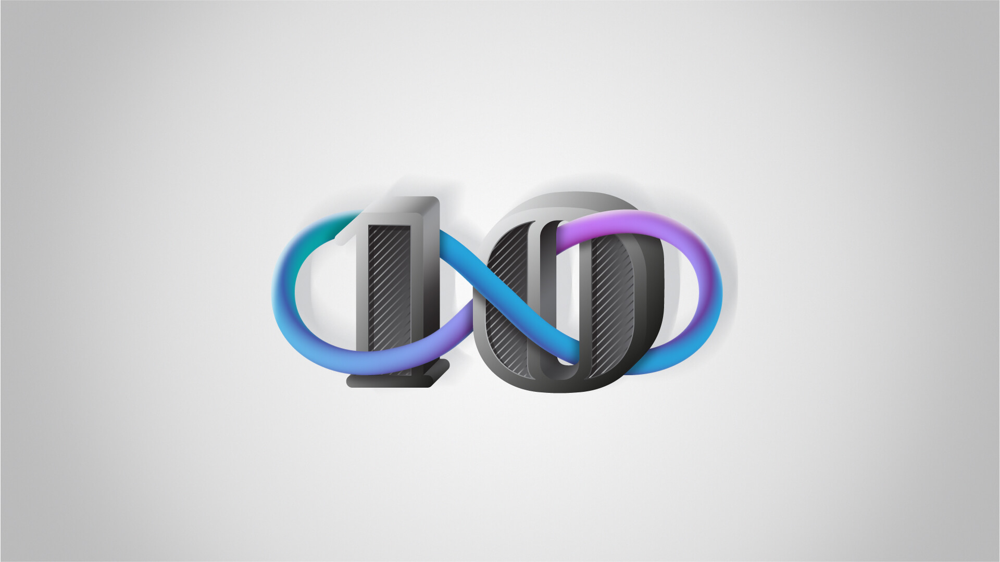
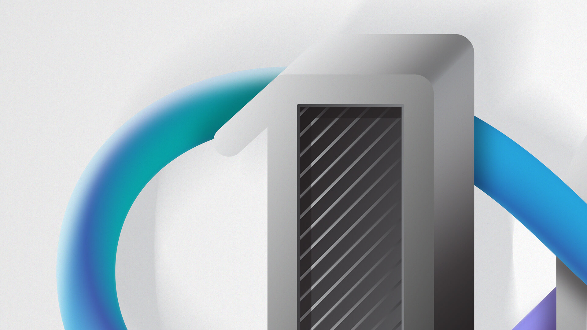
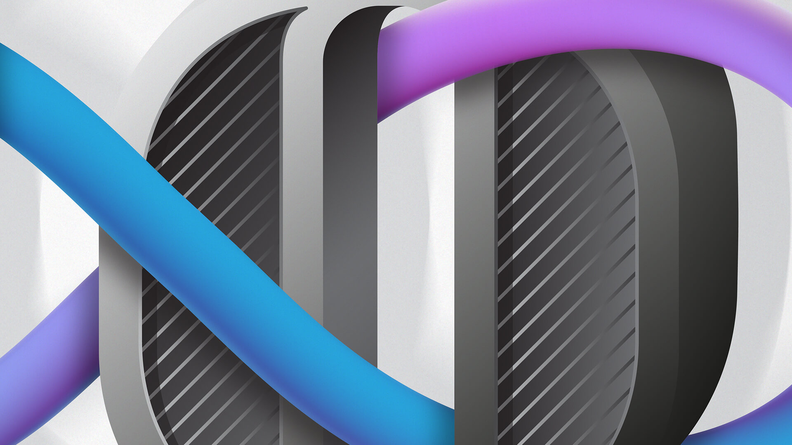
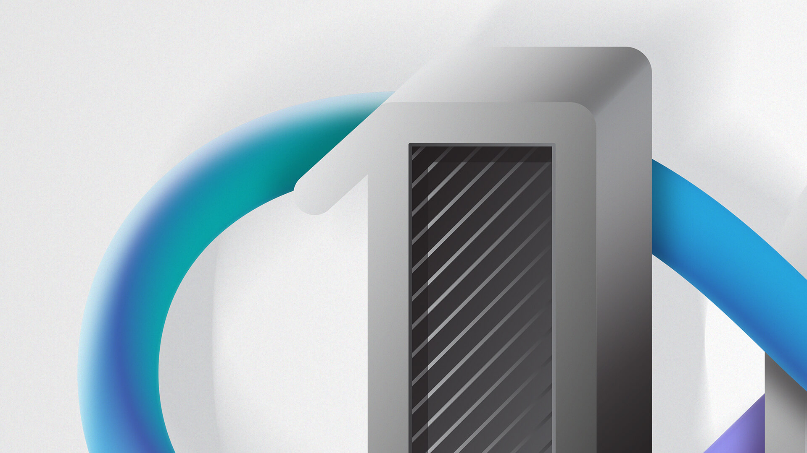
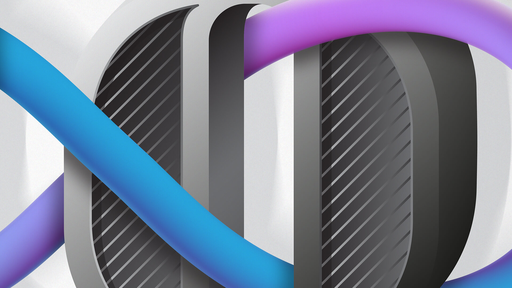
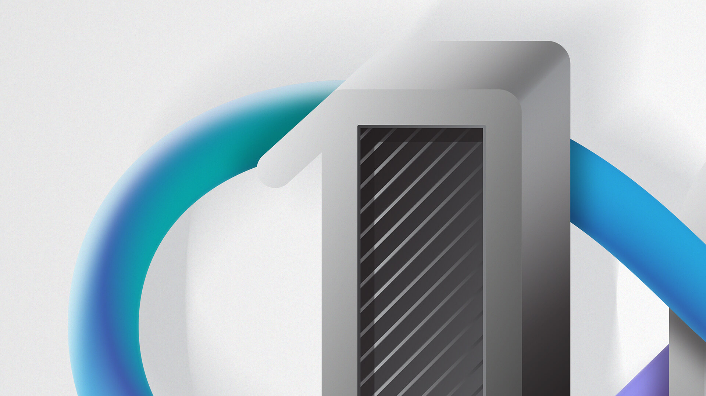
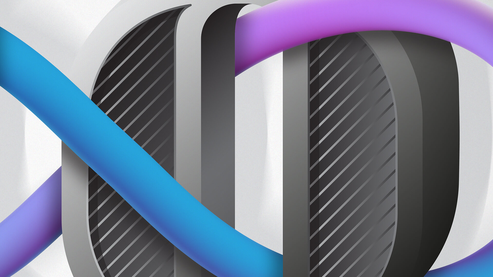

10
2017 / Graphic Composition / Personal Project
Fullsix internal project. This number 10 was created to be a part of a New Year's Countdown Video. The numbers were randomly distributed through 10 people that were interested in participating in the project.
I decided to play with the fact that my number was formed by two digits and tried to tie them together with an infinity shape, creating a group of elements that always live together as one.
The detailed layers in black and white that compose both numbers, in opposition to the bright and colourful simplistic infinity shape, create a contrast that was purposely intended to balance the elements.
This graphic image was created with Adobe Illustrator.



 





